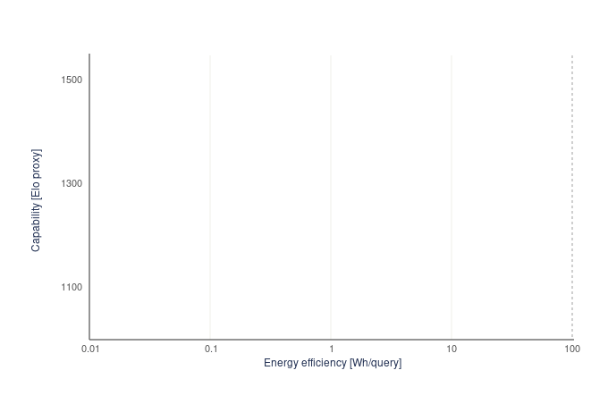

Where chain-of-thought wins
- Stronger on complex, multi-step problems — maths, code, planning.
- Can self-check and catch its own errors before answering.
- Parallel sampling of reasoning paths boosts reliability.
- The intermediate steps are (somewhat) inspectable.
What it costs
- Far higher compute, latency, energy and cost per query.
- The shown reasoning isn't always faithful to the real computation.
- Diminishing returns — and "overthinking" on simple prompts.
- A wrong early step can propagate through the whole chain.